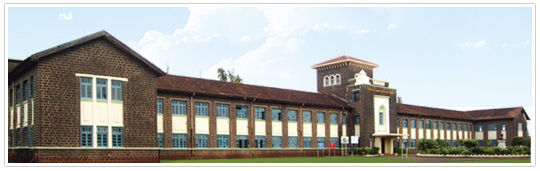

SHREE SHIVAJI EDUCATION SOCIETY'S
YASHWANTRAO CHAVAN COLLEGE OF SCIENCE, KARAD
Accredited ' A+ 'with CGPA 3.63 by NAAC ISO 9001:2015 Certified

WELCOME TO
YASHWANTRAO CHAVAN COLLEGE OF SCIENCE, KARAD
- ABOUT COLLEGE -

This college is a grant-in-aid institution affiliated to Shivaji University, Kolhapur. Having been established prior to 1972, it is included under sections 2(f) and 12(B) of the UGC Act and has been receiving grants regularly. Our College is also an ISO 9001:2015 certified College and is now accredited B by NAAC in 2011.
The college offers courses in Physics, Microbiology, Geology, Statistics, Chemistry, Pollution, Botany, Zoology, Mathematics and Electronics for education at the graduation (B. Sc.) level. The postgraduate course, M. Sc. in Microbiology also offered in this college has been its Jewel in the Crown for the past 32 years. M. Phil courses are also being offered in this college in Physics, Botany and Zoology and PhD in Microbiology.
Since the academic year 2008-09, three new courses, B.Sc. in Biotechnology (optional), B. Sc. in Computer Science and Bachelor in Computer Science (BCS) are also being offered for graduation level studies. We are now offering M. Sc. in Analytical Chemistry and PhD in Zoology since 2013.
The college has also received several grants for major and minor research projects from funding agencies like UGC, MoEF and CPCB. Besides, this college has successfully completed two COSIP projects during 1983-86 and 2000-03. The college also pays equal attention to faculty improvement and research.
- PRINCIPAL DESK -
It is my pleasure to welcome you to the website of my college, Yashwantrao Chavan College of Science, Karad.
It was founded in 1958 by the great leader from this place and the first Chief Minister of Maharashtra, Late Hon. Shri Yashwantrao Chavan with the vision of providing the best facilities for top quality science education to students of this rural area.
With a modest beginning the college has taken giant strides since then to keep up with its ideals and become one of the premier educational institutions in the Shivaji University jurisdiction today.
Accredited with a B grade by NAAC in 2011. Dr. S. B. Kengar - CV
Dr. S. B. Kengar
Principal, YCCSK
- VISION -
Be one with the downtrodden and the underprivileged
- MISSION -
To perpetuate a science culture among the rural masses of this region so that the youth develop a scientific temperament and build up a capacity for objective enquiry that can help them better their lives and help avail of the best in advanced educational facilities available locally and elsewhere in the country so as to grow up into dutiful citizens and contribute actively to the scientific growth of the nation.